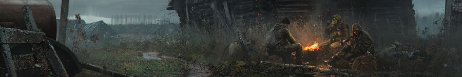
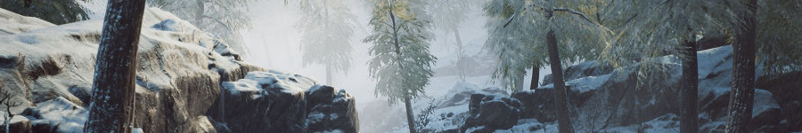
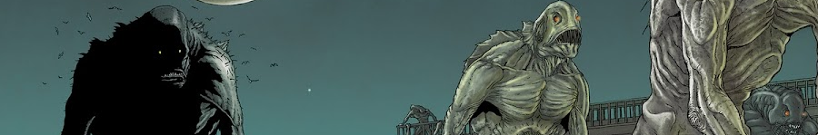
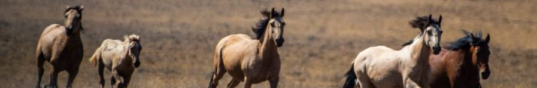

My Favorite Fiction Books
| Title | Author | Genre |
|---|---|---|
| Martin Eden | Jack London | Philosophical fiction |
| Lobo | Ernest Thompson Seton | Nature writing / Short story |
| The Sandpit Generals | Jorge Amado | Social novel |
| Roadside Picnic | Arkady and Boris Strugatsky | Science fiction / Philosophical fiction |
| The Call of the Wild | Jack London | Adventure fiction |
| Crime and Punishment | Fyodor Dostoevsky | Psychological fiction / Philosophical novel |
| The Shadow over Innsmouth | Howard Phillips Lovecraft | Horror |
| The Little Lady of the Big House | Jack London | Romantic drama |
| Catch-22 | Joseph Heller | Satirical novel / Absurdist fiction |
| 20,000 Leagues Under the Sea | Jules Verne | Science fiction / Adventure |
Martin Eden
A working-class writer climbs the social ladder to win a woman’s love, only to face crushing disillusionment. Jack London critiques individualism and the American Dream through a tragic, semi-autobiographical narrative.

Lobo
The true story of a legendary wolf and the hunter who comes to admire him. Seton's tale marks his transformation from predator to conservationist and serves as a foundational piece of modern wildlife literature.
The Sandpit Generals
A gang of street children in Brazil form a community built on friendship and resistance. Jorge Amado's novel is a stirring critique of poverty and injustice, told with deep emotional and political intensity.
Roadside Picnic
After aliens leave behind mysterious 'Zones', scavengers—called stalkers—risk everything to retrieve bizarre artifacts. The novel explores existential dread, the limits of knowledge, and the corrosive power of greed.
The Call of the Wild
Buck, a domesticated dog, is thrown into the harsh world of sledding in Alaska. Stripped of civilization, he awakens his primal instincts in a classic tale of survival and identity.
Crime and Punishment
Raskolnikov murders a pawnbroker believing he’s above morality—but is soon haunted by guilt. Dostoevsky’s psychological masterpiece dives deep into conscience, suffering, and redemption.
The Shadow over Innsmouth
A man visits a decaying town and uncovers a horrifying pact with deep-sea creatures. Lovecraft blends isolation and cosmic terror in this cornerstone of his mythos.
The Little Lady of the Big House
A romantic triangle unfolds on a California ranch, probing love, modern womanhood, and personal freedom. One of London’s most introspective novels, it challenges the boundaries of emotional and social convention.
Catch-22
Yossarian, an army bombardier, seeks escape from the insanity of war but is trapped in a logical paradox. Heller’s dark satire deconstructs bureaucracy, war, and the absurdities of modern life.
20,000 Leagues Under the Sea
Captain Nemo pilots the submarine Nautilus through a world of underwater marvels. Jules Verne combines scientific imagination and political depth in this iconic adventure.